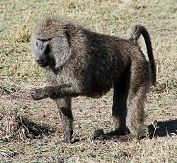
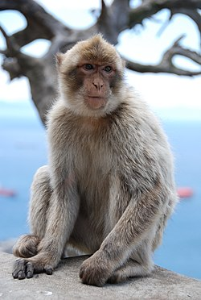

Mono Araña
El mono araña de cabeza negra, marimonda del Chocó o bracilargo (Ateles fusciceps) es una especie de primate platirrino miembro del género Ateles (monos araña) que habita en Panamá, Colombia y Ecuador.

Babuino
Es un animal extremadamente fuerte y siempre va acompañado de una especie superior Theropithecus como el gelada e incluso al mandril. Pasando por alto estos dos monos, son los mayores monos del viejo mundo, los primates más corpulentos de hecho si se exceptúan los grandes simios y los simios menores.

Mona rabona
Es un cuadrúpedo de escaso tamaño, nunca superior a los 75 cm de longitud y los 13 kg de peso. El cuerpo está recubierto de pelo pardo-amarillento, ligeramente grisáceo en algunos individuos.